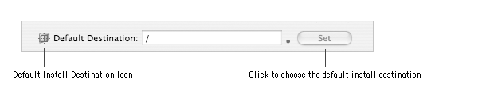
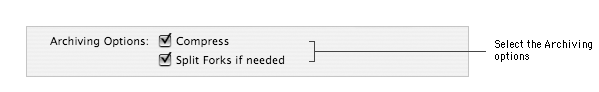
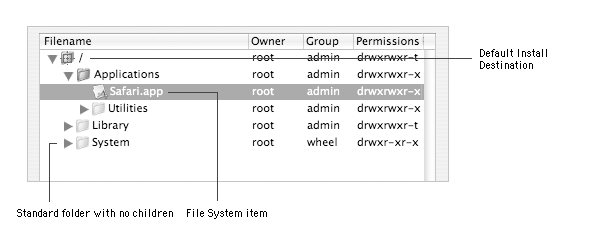
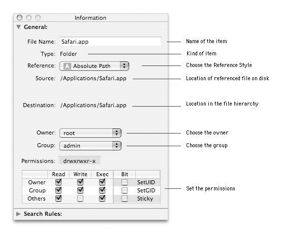
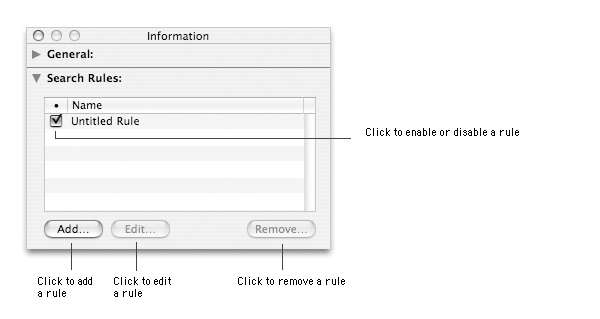
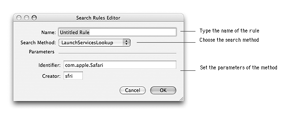

This document describes how to specify the default install destination and design the file hierarchy and the files properties.
Specifying the default Install DestinationThe default install destination is the location where Installer will install the items from the file hierarchy. This is also the starting point that will be used by Iceberg to build the archive of the file hierarchy. You can spot the default install destination in the hierarchy from its icon representing a folder with a red aimer over it.

To specify the default install destination:
| 1 | Select the package in the Packages & Metapackages list. |
| 2 | Choose View > Files. |
| 3 | Select the folder for the default install destination in the hierarchy and click on the Choose button. |
When Iceberg builds a package, the file hierarchy is archived with the pax tool in a single file conforming to the cpio format. The archiving options can be used to launch specific processings before and after the archiving process.
Two options are available:
To enable or disable archiving options:
| 1 | Select the package in the Packages & Metapackages list. |
| 2 | Choose View > Files. |
| 2 | Select or unselect the Archive options checkboxes. |
The hierarchy of files and folders which will be installed is displayed in a pane which looks like the "View as List" mode of the Finder. It works the same way. You can add items, rename folders, change permissions, owners, etc.
The file hierarchy contains three kinds of item:
|
To add a folder or file to the hierarchy:
| 1 | Select the package in the Packages & Metapackages list. | ||
| 2 | Choose View > Files. | ||
| 3 | Select the folder in which you want to insert a new item. | ||
| 4 | Choose Archive > Add Files…. | ||
| 5 | Select the files or folders to add and click Add. | ||
| 6 | Choose the reference style from the Reference Style pop-up menu.
| ||
| 7 | Select the button labeled Keep owner and group if needed. If you do not select the button, the owner and group of the new items will be the ones oftheir parent folder in the Iceberg file hierarchy. | ||
| 8 | Click Add. |
To remove a folder or file from the hierarchy:
| 1 | Select the package in the Packages & Metapackages list. | ||
| 2 | Choose View > Files. | ||
| 3 | Select the item(s) to remove from the hierarchy.
| ||
| 4 | Choose Edit > Delete. | ||
| 5 | Click Remove.
|
To move a folder or file to another location in the hierarchy:
| 1 | Select the package in the Packages & Metapackages list. | ||
| 2 | Choose View > Files. | ||
| 3 | Select the item(s) to move within the hierarchy. | ||
| 4 | Drag and drop the item(s) to the new location in the hierarchy.
|
To add a custom folder to the hiearchy:
| 1 | Select the package in the Packages & Metapackages list. |
| 2 | Choose View > Files. |
| 3 | Select the folder where to insert the custom folder. |
| 4 | Choose Archive > New Folder. |
| 5 | Type the folder name in the text field and press Return. |
To rename a custom folder:
| 1 | Select the package in the Packages & Metapackages list. | ||
| 2 | Choose View > Files. | ||
| 3 | Select the folder to rename.
| ||
| 4 | Double-click the selected row. | ||
| 5 | Type the name in the text field, then press Return. |
To reveal the content of a folder:
| 1 | Select the package in the Packages & Metapackages list. | ||
| 2 | Choose View > Files. | ||
| 3 | Select the folder (referencing a real folder) in the hierarchy. | ||
| 4 | Choose Archive > Expand > One level to disclose the content of the
first level of the folder or Archive > Expand > Fully to disclose all the content of the folder.
|
Using the inspector, you can change the owner, group or permission of the items in the file hierarchy so that they fit what they shall be when the items are installed. It is not possible to change the attributes of standard folders.
Important: This will not affect the attributes of the referenced files on disk.

To rename a custom folder with the inspector:
| 1 | Select the package in the Packages & Metapackages list. |
| 2 | Choose View > Files. |
| 3 | Select the custom folder to rename. |
| 4 | Choose Archive > Show Info. |
| 5 | Type the folder name in the Name text field, then press Return. |
To change the reference style of an item:
| 1 | Select the package in the Packages & Metapackages list. |
| 2 | Choose View > Files. |
| 3 | Select the items whose reference style you want to change. |
| 4 | Choose Archive > Show Info. |
| 5 | Choose the reference style from the Reference pop-up menu. |
To change the owner of an item:
| 1 | Select the package in the Packages & Metapackages list. |
| 2 | Choose View > Files. |
| 3 | Select the items whose owner you want to change. |
| 4 | Choose Archive > Show Info. |
| 5 | Choose the owner from the Owner pop-up menu. |
To change the group of an item:
| 1 | Select the package in the Packages & Metapackages list. |
| 2 | Choose View > Files. |
| 3 | Select the items whose group you want to change. |
| 4 | Choose Archive > Show Info. |
| 5 | Choose the group from the Group pop-up menu. |
To change the permissions of an item:
| 1 | Select the package in the Packages & Metapackages list. | ||
| 2 | Choose View > Files. | ||
| 3 | Select the items whose permissions you want to change. | ||
| 4 | Choose Archive > Show Info. | ||
| 5 | Choose the permissions from the Permissions table.
|
You can attach search rules to an item (usually an application or a bundle) to help Installer find the location of a previous version in case the item has already been installed on the disk. (*).
For instance, if you are installing an application in the /Applications folder and the user has moved a previous versions of this application to
the /Applications/Utilities folder to replace the old version in the Utilities instead of installing the new version in
/Applications and keeping the old version in /Applications/Utilities
You can attach one or many rules to the same item. The rules are evaluated from top to bottom. As soon as a rule finds a result, the evaluation is stopped. (**).
Important: You can't attach rules to a standard folder.

To attach a rule to an item:
| 1 | Select the package in the Packages & Metapackages list. |
| 2 | Choose View > Files. |
| 3 | Select the item to add a search rule to. |
| 4 | Choose Archive > Show Info. |
| 5 | Click on the disclosure triangle on the left of the Search Rules label. |
| 6 | Click Add… . |
| 7 | Set the rule and click OK. |
To edit a rule:
| 1 | Select the package in the Packages & Metapackages list. |
| 2 | Choose View > Files. |
| 3 | Select the item whose search rule you want to edit. |
| 4 | Choose Archive > Show Info. |
| 5 | Click on the disclosure triangle on the left of the Search Rules label. |
| 6 | Select the rule. |
| 7 | Click Edit… . |
| 8 | Edit the search rule and click OK. |
To remove a rule:
| 1 | Select the package in the Packages & Metapackages list. |
| 2 | Choose View > Files. |
| 3 | Select the item whose search rule you want to remove. |
| 4 | Choose Archive > Show Info. |
| 5 | Click on the disclosure triangle on the left of the Search Rules label. |
| 6 | Select the rule and click Remove… . |
| 7 | Click Remove. |
To enable or disable a rule:
| 1 | Select the package in the Packages & Metapackages list. |
| 2 | Choose View > Files. |
| 3 | Select the item whose search rule you want to enable or disable. |
| 4 | Choose Archive > Show Info. |
| 5 | Click on the disclosure triangle on the left of the Search Rules label. |
| 6 | Select the rule. |
| 7 | Select or unselect the checkbox in the Membership (•) column. |
To sort rules:
| 1 | Select the package in the Packages & Metapackages list. |
| 2 | Choose View > Files. |
| 3 | Select the item whose search rules you want to sort. |
| 4 | Choose Archive > Show Info. |
| 5 | Click on the disclosure triangle on the left of the Search Rules label. |
| 6 | Select a rule. |
| 7 | Drag and drop it to its new location. |
A search rule is defined by 3 pieces of information: its name, its method and the parameters of this method.
There are five kinds of search method:
To create a BundleIdentifierSearch rule:
| 1 | Select the package in the Packages & Metapackages list. | ||
| 2 | Choose View > Files. | ||
| 3 | Select the bundle to add a search rule to. | ||
| 4 | Choose Archive > Show Info. | ||
| 5 | Click on the disclosure triangle on the left of the Search Rules label. | ||
| 6 | Click Add… . | ||
| 7 | Type the rule name in the Name text field. | ||
| 8 | Choose BundleIdentifierSearch from the Method popup-menu. | ||
| 9 | Type the identifier of the bundle (CFBundleIdentifier) in the Identifier text field. | ||
| 10 | Type the location where to start the search in the Starting Point text field. | ||
| 11 | Set the maximum depth search with the Max Depth steppers. | ||
| 12 | Specify the folders to exclude from the search in the Excluded Dirs list. | ||
| 13 | Choose the method behavior on success from the Success Case pop-up menu.
| ||
| 14 | Click OK. |
To create a BundleVersionFilter rule:
| 1 | Select the package in the Packages & Metapackages list. | ||
| 2 | Choose View > Files. | ||
| 3 | Select the bundle to add a search rule to. | ||
| 4 | Choose Archive > Show Info. | ||
| 5 | Click on the disclosure triangle on the left of the Search Rules label. | ||
| 6 | Click Add… . | ||
| 7 | Type the rule name in the Name text field. | ||
| 8 | Choose BundleVersionFilter from the Method popup-menu. | ||
| 9 | Type the required minimum version in the Min. Version text field. | ||
| 10 | Type the required maximum version in the Max. Version text field.
| ||
| 11 | Click OK. |
To create a CheckPath rule:
| 1 | Select the package in the Packages & Metapackages list. |
| 2 | Choose View > Files. |
| 3 | Select the item to add a search rule to. |
| 4 | Choose Archive > Show Info. |
| 5 | Click on the disclosure triangle on the left of the Search Rules label. |
| 6 | Click Add… . |
| 7 | Type the rule name in the Name text field. |
| 8 | Choose CheckPath from the Method popup-menu. |
| 9 | Type the absolute path name to look for in the Path text field. |
| 10 | Click OK. |
To create a CommonAppSearch rule:
| 1 | Select the package in the Packages & Metapackages list. | ||
| 2 | Choose View > Files. | ||
| 3 | Select the application to add a search rule to. | ||
| 4 | Choose Archive > Show Info. | ||
| 5 | Click on the disclosure triangle on the left of the Search Rules label. | ||
| 6 | Click Add… . | ||
| 7 | Type the rule name in the Name text field. | ||
| 8 | Choose CommonAppSearch from the Method popup-menu. | ||
| 9 | Type the identifier of the bundle (CFBundleIdentifier) in the Identifier text field. | ||
| 10 | Type the default location of the application (usually
/Applications) in the Default Path text field.
| ||
| 11 | Click OK. |
To create a LaunchServicesLookup rule:
| 1 | Select the package in the Packages & Metapackages list. | ||
| 2 | Choose View > Files. | ||
| 3 | Select the bundle to add a search rule to. | ||
| 4 | Choose Archive > Show Info. | ||
| 5 | Click on the disclosure triangle on the left of the Search Rules label. | ||
| 6 | Click Add… . | ||
| 7 | Type the rule name in the Name text field. | ||
| 8 | Choose LaunchServicesLookup from the Method popup-menu. | ||
| 9 | Type the identifier of the bundle (CFBundleIdentifier) in the Identifier text field. | ||
| 10 | Type the creator type of the bundle (CFBundleSignature)
in the Creator text field.
| ||
| 11 | Click OK. |
(*) If you are looking for more information on search rules, you can consult the Finding Previously Installed Software chapter of the Software Distribution document.
(**) There is one exception for this rule with the BundleIdentifierSearch method when the selected behavior is not findOne.